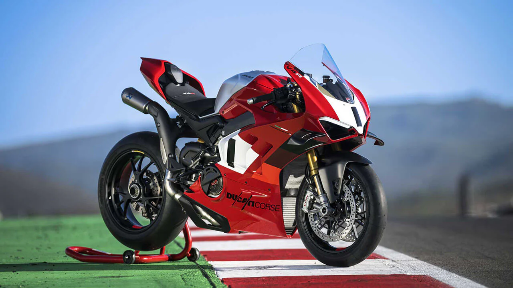
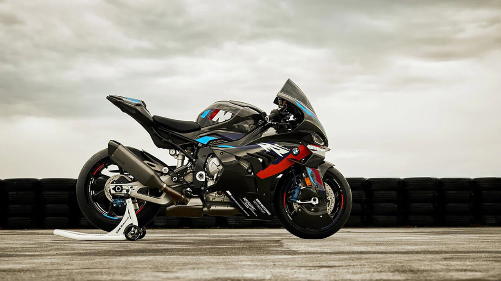

LAS 2 MEJORES MOTOS DEPORTIVAS 2023
1. DUCATI PANIGALE V4 R
La Panigale V4 R 2023 de Ducati es lo más parecido que podrás experimentar a una moto de carreras, ya que está inspirada en MotoGP. Cuenta con un motor Desmosedici Stradale R de 998 cc, que produce 207 CV a 13.500 rpm y 82 lb-pie de par motor. Al incorporar un escape de competición y aceite especialmente fabricado por Shell para el nuevo embrague en seco de la V4 R, la potencia aumenta hasta 240,5 CV.
Se espera que llegue a los concesionarios en la primavera de 2023, con un precio que supera los 40 mil dólares.
La 1000 R no podía faltar un año más, ya que nuevamente es una de las mejores motos deportivas de 2023.
2. BMW M 1000 R
Construida sobre la base de los actuales modelos S 1000 R y S 1000 RR, la nueva M R utiliza el mismo motor de cuatro cilindros en línea de 999 cc refrigerado por agua, tomado de la M 1000 RR, que produce una potencia de 205 CV a 13.500 rpm (40 CV más que la S 1000 R) y un par motor de 83 lb-pie a 11.000 rpm. La moto también incluye la tecnología BMW ShiftCam. BMW afirma que el nuevo motor de la M R es el más potente de la gama en comparación con el motor de cuatro cilindros de la S 1000 R.
Además, la BMW M 1000 R está equipada con cuatro modos de conducción (Rain, Road, Dynamic y Race), tres modos de carrera "Pro". También destaca por su Shift Assistant Pr y embrague asistido/deslizante, entre otros.
